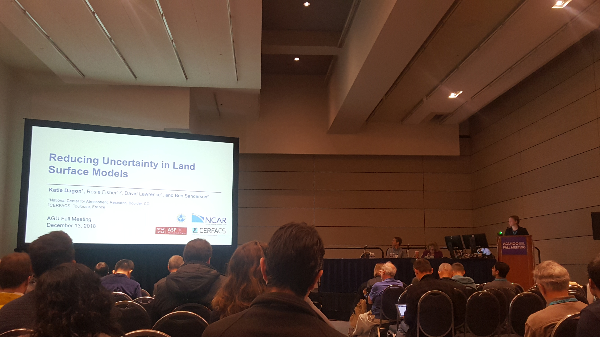

New paper alert! Here we introduce a framework for estimating uncertain Community Land Model biophysical parameters with machine learning-based emulation.
December 17, 2020
This past week I attended the first completely virtual AGU Fall meeting. I presented my work in a couple of virtual sessions on machine learning. I also lectured on an "Introduction to Neural Networks, with an application to Climate Model Emulation" during the AGU machine learning tutorial with over 600 virtual participants! Presentation slides and code examples are both available on the website.
June 26, 2020
This week I participated in the Artificial Intelligence for Earth System Science (AI4ESS) Summer School, held virtually and sponsored by NCAR. I served as a lecturer and panelist and spoke about "Machine Learning for Emulation and Uncertainty Quantification in a Land Surface Model." Virtual participation averaged nearly 1000 participants throughout the week! Presentation slides and recordings are both available on the website, and you can check out my recorded lecture here.
May 2020
My work was recently featured in APS News, in an article about Understanding the Dynamic Climate System. Check in out here: APS News May 2020.
February 7, 2020
Today I participated in an awesome event at the WOW! Children's Museum in Lafayette, CO. The event was the second annual Girls in Science Night, designed for girls in the community ages 3-8 to explore how to be a scientist through hands-on activities. Along with several NCAR colleagues, I helped with an interactive booth demonstrating how clouds and aerosols work.
UPDATE: The Climate Engineering GRC/GRS has been postponed to Summer 2022. More information to follow!
December 16, 2019
Applications are now open for the 2020 Gordon Research Seminar on Climate Engineering! The seminar will take place from June 27-28, 2020 at Sunday River in Newry, Maine. The Gordon Research Seminar (GRS) on Climate Engineering is a unique forum for graduate students, post-docs, and other scientists with comparable levels of experience and education to present and exchange new data and cutting edge ideas. If you are interested in being considered for an oral session please submit your abstract by March 27, 2020. All other applications are due May 30, 2020. The Gordon Research Conference (GRC) on Climate Engineering will immediately follow the GRS and attendance at both is strongly encouraged. As one of the GRS chairs, I am happy to answer any questions about the seminar. Please help us spread the word!
December 13, 2019
This past week I attended the annual meeting of the American Geophysical Union (AGU) in San Francisco. It was a busy week presenting and learning about new science, catching up with old friends, and meeting new colleagues. I presented my work "A Machine Learning Approach to Quantify Land Model Parameter Uncertainty" in an oral session on Innovation and Exploration of Observations and Earth System Models Using Machine Learning and Big Data Analysis. I also gave a pop-up talk at the UCAR/NCAR booth in the exhibit hall on "Machine Learning for Climate Science".
September 2019
Recently I was asked to serve again as a scientific consultant for the video series ACS Reactions. This video focused on weird ways to fight climate change, including space mirrors, ocean iron fertilization, and reducing methane emissions from cows. Check out the video here: Space Mirrors and Other Weird Ways to Fight Climate Change.
August 12, 2019
Today I transition from ASP Postdoc to Project Scientist at NCAR. I'm excited to start my new position, working on climate variability, uncertainty quantification, and machine learning in CGD's Climate Change Research Section.
July 15, 2019
For the past few months, I have been helping to develop a new Traveling Climate Exhibit led by the UCAR Center for Science Education. In particular, I helped develop content for an interactive exhibit on your personal carbon footprint. Today we tested a prototype design at the Mesa Lab, and recorded visitor feedback. It was very exciting to see the exhibit in action! Stay tuned for the public opening in Boulder this fall, as well as the locations the exhibit will visit around the country.
June 3, 2019
Today I was honored to speak with students attending the Undergraduate Leadership Workshop here at NCAR. We discussed career paths, leadership roles, and research goals. The annual program is designed to support undergraduates interested in a variety of careers in the atmospheric sciences, and I highly recommend that interested students apply!
May 3, 2019
Today I attended the NCAR/UCP Science and Discovery Day, and organization-wide day of networking and scientific presentations. I gave a talk on my work using a machine learning approach to reduce land model uncertainties, and enjoyed talking with staff across the organization.
April 2019
I was recently quoted in EOS in response to a scientific paper studying climate variations during the Last Glacial Maximum using a combination of proxy data and models.
February 13, 2019
For the past three days, NCAR hosted the 2019 Land Model Working Group Meeting. I gave a talk on machine learning for parameter estimation with CLM5, and got some great feedback on my work during the meeting. I was also honored to win the Andrew Slater Award for best student or postdoc performance at the 2019 LMWG Meeting.
February 9, 2019
The last paper of my PhD thesis is out! In this work we explore potential impacts of solar geoengineering on terrestrial vegetation using CESM. We find impacts related to biome shifts, rates of warming, and coupled carbon-nitrogen-water responses.
February 8, 2019
This past week was the Community Terrestrial Systems Model (CTSM) Tutorial. I helped organize practical sessions for the tutorial, and gave a lecture on my parameter estimation work. We had 45 students attend in person, with 50-100 more listening in on the webcast. It was a great week of teaching and learning with CTSM and CLM!
December 17, 2018
Last week I attended the AGU Fall Meeting in Washington, DC. My talk on "Reducing Uncertainty in Land Surface Models", was part of an interesting and diverse session on "Interpreting Uncertainty in Climate Models, Observations, and Large Data Sets to Better Inform Scientific Understanding in Geoscience". I enjoyed meeting the conveners and other speakers, and attending the excellent poster session that accompanied the oral session. It was also great to catch up with old friends and colleagues, and brainstorm ideas for future projects.

October 26, 2018
Today I drove up to Fort Collins, Colorado to present at the Young Scientist Symposium on Atmospheric Research at Colorado State University. I enjoyed talking about my work on land surface model uncertainty, as well as meeting other Front Range early career researchers in atmospheric science.
October 19, 2018
This past week I participated in Science-a-Thon, a celebration of science and scientists on social media sponsored by the Earth Science Women's Network. A had a lot of fun documenting my week of science on Twitter and seeing photos from friends and colleagues all over the world.
August 2018
I was recently quoted in the Atlantic in response to a new scientific study on the impact of solar geoengineering on crops.
August 3, 2018
This week the SOARS internship program wrapped up with final presentations and a poster session. I thouroughly enjoyed participating in the program as a community mentor this summer, and I hope to participate again in the future. I was also very impressed with the results from the SOARS proteges' projects and enjoyed hearing about their summer work. I encourage any interested students to apply for next year!
July 27, 2018
Today I gave a seminar presentation at the University of Washington in the Department of Atmospheric Sciences. I enjoyed speaking with students and faculty throughout the day, as well as having an opportunity to speak in more detail about my land surface model uncertainty work. And of course, enjoying Seattle in the summer!
July 18, 2018
I recently returned from the Earth Educators' Rendezvous conference at the University of Kansas. I was primarily attending to participate in a 3-day workshop entitled Preparing for an Academic Career. Both the workshop and the conference were useful and enjoyable gatherings. I especially liked that the workshop leaders were all from different types of institutions, so the participants could get a sense of what different teaching and research environments are like. I also enjoyed participating in some of the broader Rendezvous sessions on teaching strategies and collaborative opportunities.

June 19, 2018
Today I presented my work at the 2018 CESM Workshop in Boulder, as part of the Land Model Working Group session. I was excited to speak formally for the first time about my postdoc work on reducing parametric uncertainty in land models.
May 18, 2018
During the past three days, the ASP postdocs were delighted to welcome Dr. Kim Cobb from Georgia Tech for the Thompson Lecture Series. Dr. Cobb gave two great talks during her time at NCAR, spanning her recent efforts on climate communication and her long-term research on tropical Pacific paleoclimate reconstructions from corals. Along the way we had many valuable and productive conversations about career development, work-life balance, and the future of scientific research.
April 9, 2018
This past weekend I traveled to Washington, D.C. to volunteer at the USA Science and Engineering Festival. I helped staff the UCAR/NCAR science education booth, where we had hands-on educational activities for all ages with a theme of "Weather that Spins." Included in our booth were tornado tubes, visualizations of hurricanes, and other fun activities to demonstrate atmospheric pressure and the conservation of angular momentum. It was an amazingly busy event, with our booth constantly filled with school groups, families, and kids of all ages. I loved talking about weather and climate with kids and hearing about how much they love science!

March 2018
I recently served as a scientific consultant and expert reviewer for the video series Reactions, produced by the American Chemical Society with PBS Digital Studios. The video I helped with covers the impact of methane on climate change, specifically focusing on methane emissions from agriculture. I had a lot of fun reviewing the material and the producers did a great job with the final cut. Check out the video here: Cow Burps Are Warming the Planet.
February 27, 2018
Next week I'll be attending the American Physical Society March Meeting in Los Angeles. As a member of the Topical Group on the Physics of Climate and a new member of the GPC Program Committee, I'm especially excited for the GPC events on Tuesday March 6th. In the morning five invited speakers will participate in a session on "Energy Flows in The Climate System", while the afternoon consists of invited and contributed talks on "Multi-Scale Flows and Pathways in the Climate System." You can find more details in the latest GPC Newsletter.
February 8, 2018
This week NCAR hosted the Land Model Working Group Meeting at the Mesa Lab. It was a busy 3 days of awesome land modeling talks, featuring everything from plant hydraulics to drought and fire risk. The latest version of the Community Land Model, CLM5, was also released during the week. We finished off the week with a great tutorial on the new FATES model (Functionally Assembled Terrestrial Ecosystem Simulator), which is an open source dynamic vegetation model that can be used with CLM.
January 19, 2018
Today I took part in Colorado Science Day at the State Capitol in Denver. The event was organized by Project Bridge Colorado, an organization aimed at bridging the communication gap between scientists and the communities they work in. We presented our research to policymakers and staff during a special poster session featuring more than 50 early-career scientists from all across Colorado. It was a great experience talking to my state senator about my research and the work we do at NCAR. I also enjoyed meeting the organizers and other participants who were all equally excited about science communication and science policy! You can check out a collection of all the abstracts here.
December 8, 2017
I'll be attending the AGU Fall Meeting in New Orleans next week. My talk is on Friday December 15th at 1:40pm, part of session B53J: Integrated Understanding of Climate, Carbon, Nutrient Cycles, Human Activities, and Their Interactions in Terrestrial Ecosystems. Come hear about how solar geoengineering impacts vegetation and lots of other fun topics!
November 7, 2017
Today I was honored to be a guest speaker at Mrs. Dana Wiegand's fourth grade class at Twin Peaks Charter Academy in Longmont. We talked about the difference between weather and climate, effects of climate change, and simple things kids can do to reduce greenhouse gas emissions (like turning off the lights when no one is in the classroom). We even had time to do the lego supercomputer activity (see below) which was a big hit. I loved talking to the kids about climate science and hope to be able to do it again in the future!
November 4, 2017
Today I volunteered at Super Science Saturday, a fun public science event held at the Mesa Lab where I work. I helped lead a lego activity for kids to learn about how supercomputers work. The legos were very popular and overall it was a great day of science!

October 19, 2017
New paper out in JGR Atmospheres! In this study we investigate the effects of solar geoengineering on regional climate variability, including extreme heat events.
September 25, 2017
Today I start my postdoc at NCAR, where I will be working in the Climate & Global Dynamics Laboratory with the Terrestrial Sciences Section.
September 13, 2017
Today I completed the last official requirement of my Ph.D. and presented my thesis in a public defense at Harvard. It was wonderful to share the day with many family members and friends!
September 5, 2017
I was honored to be a recent guest on Radio Boise's Building a Greener Idaho. I spoke with Kris Wilson about geoengineering in a segment entitled "Big Solutions for Big Problems." Check out a recording of the session here.
July 28, 2017
Today I successfully defended my Ph.D. thesis, "Exploring the Climate Impacts of Solar Geoengineering on Land-Atmosphere Interactions." Up next is preparing for my move to Boulder, Colorado where I will start my NCAR postdoc at the end of September.
July 27, 2017
I was excited to be a part of the inaugural Gordon Research Conference on Climate Engineering, held this summer at Sunday River in Newry, Maine. It was great to connect with old friends and practice presenting my research before my Ph.D. defense.
March 2017
I was pleased to accept an offer for a postdoctoral fellowship from the Advanced Study Program at the National Center for Atmospheric Research. Now I turn my attention to wrapping up my Ph.D!
January 2017
I recently provided expert commentary for a Science in the News piece on the 2016 global temperature record. Check out the article here.